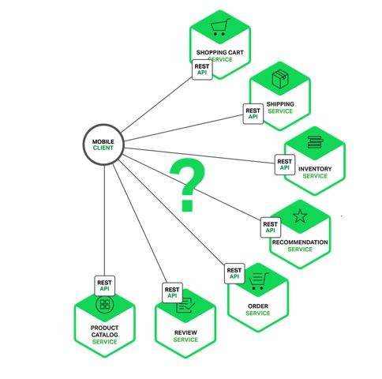

API 网关从入门到放弃
（给ImportNew加星标，提高Java技能）
作者：aCoder2013
github.com/aCoder2013/blog/issues/35
前言
假设你正在开发一个电商网站，那么这里会涉及到很多后端的微服务，比如会员、商品、推荐服务等等。

那么这里就会遇到一个问题，APP/Browser怎么去访问这些后端的服务? 如果业务比较简单的话，可以给每个业务都分配一个独立的域名(https://service.api.company.com)，但这种方式会有几个问题:
每个业务都会需要鉴权、限流、权限校验等逻辑，如果每个业务都各自为战，自己造轮子实现一遍，会很蛋疼，完全可以抽出来，放到一个统一的地方去做。
如果业务量比较简单的话，这种方式前期不会有什么问题，但随着业务越来越复杂，比如淘宝、亚马逊打开一个页面可能会涉及到数百个微服务协同工作，如果每一个微服务都分配一个域名的话，一方面客户端代码会很难维护，涉及到数百个域名，另一方面是连接数的瓶颈，想象一下你打开一个APP，通过抓包发现涉及到了数百个远程调用，这在移动端下会显得非常低效。
每上线一个新的服务，都需要运维参与，申请域名、配置Nginx等，当上线、下线服务器时，同样也需要运维参与，另外采用域名这种方式，对于环境的隔离也不太友好，调用者需要自己根据域名自己进行判断。
另外还有一个问题，后端每个微服务可能是由不同语言编写的、采用了不同的协议，比如HTTP、Dubbo、GRPC等，但是你不可能要求客户端去适配这么多种协议，这是一项非常有挑战的工作，项目会变的非常复杂且很难维护。
后期如果需要对微服务进行重构的话，也会变的非常麻烦，需要客户端配合你一起进行改造，比如商品服务，随着业务变的越来越复杂，后期需要进行拆分成多个微服务，这个时候对外提供的服务也需要拆分成多个，同时需要客户端配合你进行改造，非常蛋疼。
API Gateway

更好的方式是采用API网关，实现一个API网关接管所有的入口流量，类似Nginx的作用，将所有用户的请求转发给后端的服务器，但网关做的不仅仅只是简单的转发，也会针对流量做一些扩展，比如鉴权、限流、权限、熔断、协议转换、错误码统一、缓存、日志、监控、告警等，这样将通用的逻辑抽出来，由网关统一去做，业务方也能够更专注于业务逻辑，提升迭代的效率。
通过引入API网关，客户端只需要与API网关交互，而不用与各个业务方的接口分别通讯，但多引入一个组件就多引入了一个潜在的故障点，因此要实现一个高性能、稳定的网关，也会涉及到很多点。

API注册
业务方如何接入网关?一般来说有几种方式。
第一种采用插件扫描业务方的API，比如Spring MVC的注解，并结合Swagger的注解，从而实现参数校验、文档&&SDK生成等功能，扫描完成之后，需要上报到网关的存储服务。
手动录入。比如接口的路径、请求参数、响应参数、调用方式等信息，但这种方式相对来说会麻烦一些，如果参数过多的话，前期录入会很费时费力。

配置文件导入。比如通过Swagger\OpenAPI等，比如阿里云的网关:

协议转换
内部的API可能是由很多种不同的协议实现的，比如HTTP、Dubbo、GRPC等，但对于用户来说其中很多都不是很友好，或者根本没法对外暴露，比如Dubbo服务，因此需要在网关层做一次协议转换，将用户的HTTP协议请求，在网关层转换成底层对应的协议，比如HTTP -> Dubbo, 但这里需要注意很多问题，比如参数类型，如果类型搞错了，导致转换出问题，而日志又不够详细的话，问题会很难定位。
服务发现
网关作为流量的入口，负责请求的转发，但首先需要知道转发给谁，如何寻址，这里有几种方式:
写死在代码/配置文件里，这种方式虽然比较挫，但也能使用，比如线上仍然使用的是物理机，IP变动不会很频繁，但扩缩容、包括应用上下线都会很麻烦，网关自身甚至需要实现一套健康监测机制。
域名。采用域名也是一种不错的方案，对于所有的语言都适用，但对于内部的服务，走域名会很低效，另外环境隔离也不太友好，比如预发、线上通常是同一个数据库，因此网关读取到的可能是同一个域名，这时候预发的网关调用的就是线上的服务。
注册中心。采用注册中心就不会有上述的这些问题，即使是在容器环境下，节点的IP变更比较频繁，但节点列表的实时维护会由注册中心搞定，对网关是透明的，另外应用的正常上下线、包括异常宕机等情况，也会由注册中心的健康检查机制检测到，并实时反馈给网关。并且采用注册中心性能也没有额外的性能损耗，采用域名的方式，额外需要走一次DNS解析、Nginx转发等，中间多了很多跳，性能会有很大的下降，但采用注册中心，网关是和业务方直接点对点的通讯，不会有额外的损耗。
服务调用
网关由于对接很多种不同的协议，因此可能需要实现很多种调用方式，比如HTTP、Dubbo等，基于性能原因，最好都采用异步的方式，而Http、Dubbo都是支持异步的，比如apache就提供了基于NIO实现的异步HTTP客户端。
因为网关会涉及到很多异步调用，比如拦截器、HTTP客户端、dubbo、redis等，因此需要考虑下异步调用的方式，如果基于回调或者future的话，代码嵌套会很深，可读性很差，可以参考zuul和spring cloud gateway的方案，基于响应式进行改造。
优雅下线
优雅下线也是网关需要关注的一个问题，网关底层会涉及到很多种协议，比如HTTP、Dubbo，而HTTP又可以继续细分，比如域名、注册中心等，有些自身就支持优雅下线，比如Nginx自身是支持健康监测机制的，如果检测到某一个节点已经挂掉了，就会把这个节点摘掉，对于应用正常下线，需要结合发布系统，首先进行逻辑下线，然后对后续Nginx的健康监测请求直接返回失败(比如直接返回500),然后等待一段时间(根据Nginx配置决定)，然后再将应用实际下线掉。另外对于注册中心的其实也类似，一般注册中心是只支持手动下线的，可以在逻辑下线阶段调用注册中心的接口将节点下线掉，而有些不支持主动下线的，需要结合缓存的配置，让应用延迟下线。另外对于其他比如Dubbo等原理也是类似。
性能
网关作为所有流量的入口，性能是重中之重，早期大部分网关都是基于同步阻塞模型构建的，比如Zuul 1.x。但这种同步的模型我们都知道，每个请求/连接都会占用一个线程，而线程在JVM中是一个很重的资源，比如Tomcat默认就是200个线程，如果网关隔离没有做好的话，当发生网络延迟、FullGC、第三方服务慢等情况造成上游服务延迟时，线程池很容易会被打满，造成新的请求被拒绝，但这个时候其实线程都阻塞在IO上，系统的资源被没有得到充分的利用。另外一点，容易受网络、磁盘IO等延迟影响。需要谨慎设置超时时间，如果设置不当，且服务隔离做的不是很完善的话，网关很容易被一个慢接口拖垮。
而异步化的方式则完全不同，通常情况下一个CPU核启动一个线程即可处理所有的请求、响应。一个请求的生命周期不再固定于一个线程，而是会分成不同的阶段交由不同的线程池处理，系统的资源能够得到更充分的利用。而且因为线程不再被某一个连接独占，一个连接所占用的系统资源也会低得多，只是一个文件描述符加上几个监听器等，而在阻塞模型中，每条连接都会独占一个线程，而线程是一个非常重的资源。对于上游服务的延迟情况，也能够得到很大的缓解，因为在阻塞模型中，慢请求会独占一个线程资源，而异步化之后，因为单条连接所占用的资源变的非常低，系统可以同时处理大量的请求。
如果是JVM平台，Zuul 2、Spring Cloud gateway等都是不错的异步网关选型，另外也可以基于Netty、Spring Boot2.x的webflux、vert.x或者servlet3.1的异步支持进行自研。
缓存
对于一些幂等的get请求，可以在网关层面根据业务方指定的缓存头做一层缓存，存储到Redis等二级缓存中，这样一些重复的请求，可以在网关层直接处理，而不用打到业务线，降低业务方的压力，另外如果业务方节点挂掉，网关也能够返回自身的缓存。
限流
限流对于每个业务组件来说，可以说都是一个必须的组件，如果限流做不好的话，当请求量突增时，很容易导致业务方的服务挂掉，比如双11、双12等大促时，接口的请求量是平时的数倍，如果没有评估好容量，又没有做限流的话，很容易服务整个不可用，因此需要根据业务方接口的处理能力，做好限流策略，相信大家都见过淘宝、百度抢红包时的降级页面。
因此一定要在接入层做好限流策略，对于非核心接口可以直接将降级掉，保障核心服务的可用性，对于核心接口，需要根据压测时得到的接口容量，制定对应的限流策略。限流又分为几种:
单机。单机性能比较高，不涉及远程调用，只是本地计数，对接口RT影响最小。但需要考虑下限流数的设置，比如是针对单台网关、还是整个网关集群，如果是整个集群的话，需要考虑到网关缩容、扩容时修改对应的限流数。
分布式。分布式的就需要一个存储节点维护当前接口的调用数，比如redis、sentinel等，这种方式由于涉及到远程调用，会有些性能损耗，另外也需要考虑到存储挂掉的问题，比如redis如果挂掉，网关需要考虑降级方案，是降级到本地限流，还是直接将限流功能本身降级掉。
另外还有不同的策略:简单计数、令牌桶等，大部分场景下其实简单计数已经够用了，但如果需要支持突发流量等场景时，可以采用令牌桶等方案。还需要考虑根据什么限流，比如是IP、接口、用户维度、还是请求参数中的某些值，这里可以采用表达式，相对比较灵活。
稳定性
稳定性是网关非常重要的一环，监控、告警需要做的很完善才可以，比如接口调用量、响应时间、异常、错误码、成功率等相关的监控告警，还有线程池相关的一些，比如活跃线程数、队列积压等，还有些系统层面的，比如CPU、内存、FullGC这些基本的。
网关是所有服务的入口，对于网关的稳定性的要求相对于其他服务会更高，最好能够一直稳定的运行，尽量少重启，但当新增功能、或者加日志排查问题时，不可避免的需要重新发布，因此可以参考zuul的方式，将所有的核心功能都基于不同的拦截器实现，拦截器的代码采用Groovy编写，存储到数据库中，支持动态加载、编译、运行，这样在出了问题的时候能够第一时间定位并解决，并且如果网关需要开发新功能，只需要增加新的拦截器，并动态添加到网关即可，不需要重新发布。
熔断降级
熔断机制也是非常重要的一项。若某一个服务挂掉、接口响应严重超时等发生，则可能整个网关都被一个接口拖垮，因此需要增加熔断降级，当发生特定异常的时候，对接口降级由网关直接返回，可以基于Hystrix或者Resilience4j实现。
日志
由于所有的请求都是由网关处理的，因此日志也需要相对比较完善，比如接口的耗时、请求方式、请求IP、请求参数、响应参数(注意脱敏)等，另外由于可能涉及到很多微服务，因此需要提供一个统一的traceId方便关联所有的日志，可以将这个traceId置于响应头中，方便排查问题。
隔离
比如线程池、http连接池、redis等应用层面的隔离，另外也可以根据业务场景，将核心业务部署带单独的网关集群，与其他非核心业务隔离开。
网关管控平台
这块也是非常重要的一环，需要考虑好整个流程的用户体验，比如接入到网关的这个流程，能不能尽量简化、智能，比如如果是dubbo接口，我们可以通过到git仓库中获取源码、解析对应的类、方法，从而实现自动填充，尽量帮用户减少操作；另外接口一般是从测试->预发->线上，如果每次都要填写一遍表单会非常麻烦，我们能不能自动把这个事情做掉，另外如果网关部署到了多个可用区、甚至不同的国家，那这个时候，我们还需要接口数据同步功能，不然用户需要到每个后台都操作一遍，非常麻烦。
这块个人的建议是直接参考阿里云、aws等提供的网关服务即可，功能非常全面。
其他
其他还有些需要考虑到的点，比如接口mock，文档生成、sdk代码生成、错误码统一、服务治理相关的等，这里就不累述了。
总结
目前的网关还是中心化的架构，所有的请求都需要走一次网关，因此当大促或者流量突增时，网关可能会成为性能的瓶颈，而且当网关接入的大量接口的时候，做好流量评估也不是一项容易的工作，每次大促前都需要跟业务方一起针对接口做压测，评估出大致的容量，并对网关进行扩容，而且网关是所有流量的入口，所有的请求都是由网关处理，要想准确的评估出容量很复杂。可以参考目前比较流行的ServiceMesh，采用去中心化的方案，将网关的逻辑下沉到sidecar中，sidecar和应用部署到同一个节点，并接管应用流入、流出的流量，这样大促时，只需要对相关的业务压测，并针对性扩容即可，另外升级也会更平滑，中心化的网关，即使灰度发布，但是理论上所有业务方的流量都会流入到新版本的网关，如果出了问题，会影响到所有的业务，但这种去中心化的方式，可以先针对非核心业务升级，观察一段时间没问题后，再全量推上线。另外ServiceMesh的方案，对于多语言支持也更友好。
看完本文有收获？请转发分享给更多人
关注「ImportNew」，提升Java技能

好文章，我在看❤️